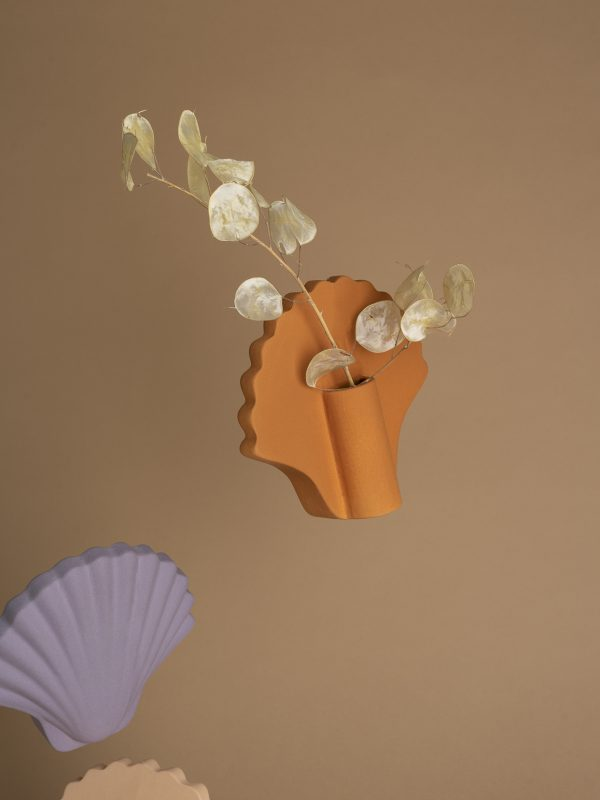

Lifestyle objects created using modern
prototyping techniques and handcrafted
by local artisans in Barcelona
Lifestyle objects created using modern
prototyping techniques and handcrafted
by local artisans in Barcelona

Los Objetos Decorativos
aims to create
a collection of lifestyle elements
that are present on the daily scene
The essence of the project is to keep on creating elements through
the exploration of new materials and contemporary techniques.